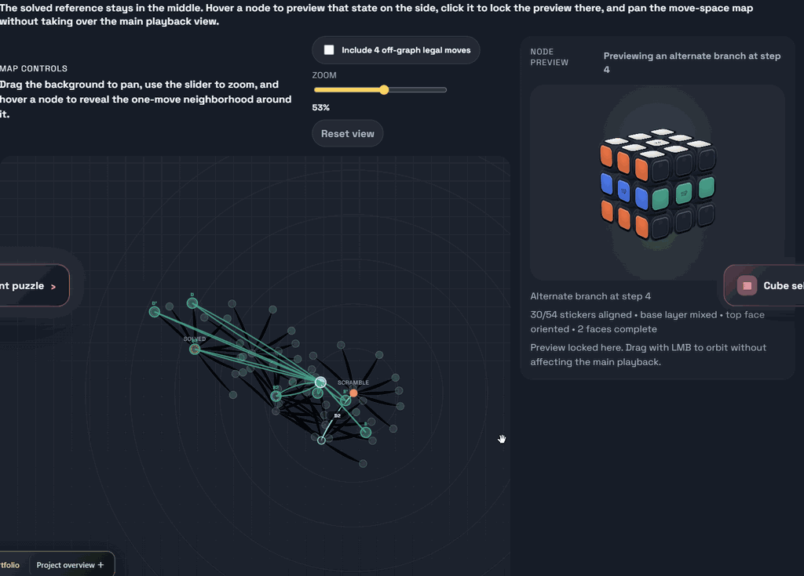
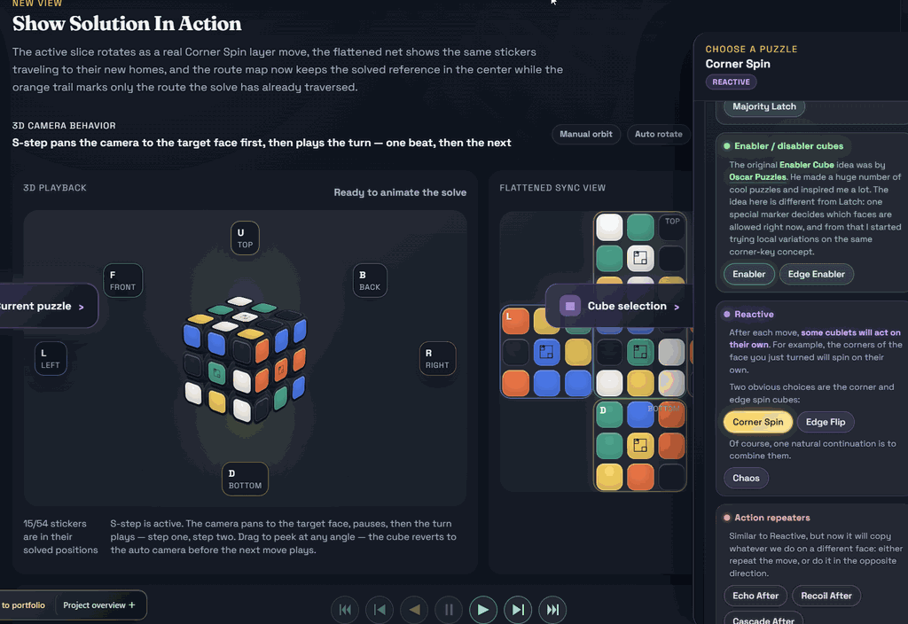
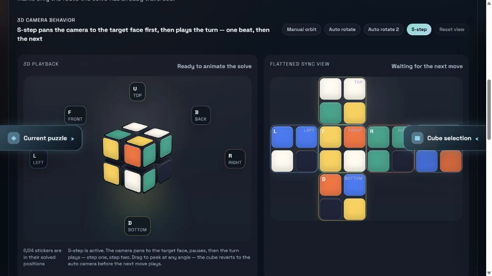

Interactive application
Interactive Video
Overview · selected highlights
Advanced Rubik & Variant Studio
A puzzle studio where a move can change which moves are legal next. Begin with Latch Cube, then compare directional locks, bandages, coupled turns and reactive variants through synchronized 3D puzzles, flat nets and local route graphs.
TurnConstrainSolve
- ▣
Choose the mechanics
Select a variant with explicit move constraints and state changes.
- ↻
Make a legal turn
Watch the move alter both the puzzle and future possibilities.
- ⌘
Inspect another view
Relate the 3D puzzle to its net and available routes.
- ↺
Explore a route back
Use the supported solving tools to examine how the constraints matter.
The interesting state includes the rules for the next move, not only the arrangement of pieces.


